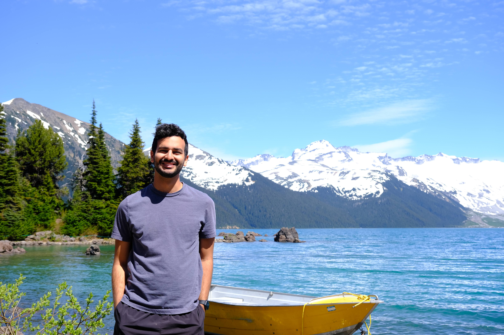
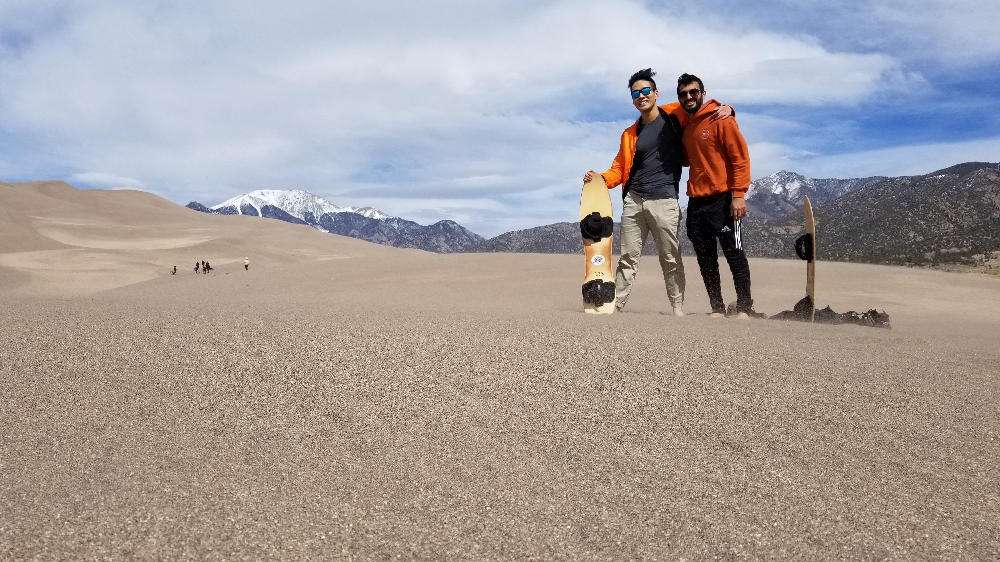

My name is Bassel Saleh, I’m 26 years old living in Austin, Texas, and I’m currently pursuing a PhD in Computational Science, Engineering, and Mathematics (CSEM) at the University of Texas. I am in my fifth (and hopefully final) year in the program, and as explained on the home page, I created this blog to synthesize some of the things I’ve learned and work on developing a voice that is both technical and personal.
I received two Bachelors of Science, one in physics and the other in computer science, also from the University of Texas. I earned a Master’s degree in CSEM after completing the coursework for my PhD program.
My full CV can be found here.

Research Interests
My interests lie in the space where computation meets interesting physics. A strong theme in my research has been quantitification of uncertainty, especially as it relates to solving Bayesian inference problems with expensive or biased forward models. My main line of research, that which pertains to my dissertation, is about solving the inference problem in gravitational wave data analysis. In short, I get to study the astrophysics of colliding black holes in extreme gravitational environments, while focusing on the general challenges of performing numerical inference, namely the problem of sampling from probability distributions in high dimensions.
I also work on scientific machine learning. Data-driven solutions to modeling complex systems in physics and engineering are gaining in popularity, largely because of how computationally efficient these methods can be. However, in critical systems (e.g. jet plane autopilot, nuclear reactor management, extreme weather prediction), the consequences of innacurate or untrustworthy model predictions can cost billions of dollars and even human lives, so proper quantification of uncertainty is a necessity. This is the second primarily line of my research.
Personal Interests
Alright, I’m gonna be honest, I tried to use ChatGPT to write this section because I didn’t know how to express myself. The truth is that outside of my professional pursuits, my interests are quite broad and kind of all over the place. In my free time I tend to get sucked into Wikipedia rabit holes and podcast deep dives, a habit I hope that I share with many of the readers of this page. It’s very much in the spirit of climbing the giant, to pursue knowledge in as many fields as possible, while remembering to “follow the fun” and not get too haughty about it. Broadly I’d say I’m most interested in history and linguistics, in the sense that if I were barred from a career in STEM, those would be the subjects I’d be most excited to engage with.
Outside of the high brow stuff, my hobbies include soccer1, video games, chess, and trying my best to spend quality time with friends and family. My favorite season is summer because I love to swim and enjoy the sun. In Austin, summer means eating tacos and drinking beer under clear skies, taking a dip in the natural springs and watering holes of central Texas, and hiking through lush greenbelts with my friends.

Finally, I love to travel. From Covid-era road trips to hike through remote national parks to relaxed Mediterannean escapes on the islands of Malta and Cyprus, I’m a firm believer that the more of the world you see the more full a person you become.